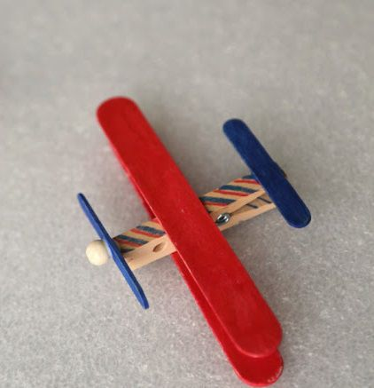

Small Office Home Office - Ice-Cream Stick Fighter Plane
Ice-Cream Stick Fighter Plane
If your little child isn’t much of a reader, let him or her turn the ice cream sticks into a fighter plane instead.

What waste you need:
- 4 ice cream sticks
- 1 wooden clothespin
- Paint
- Eraser/Small bead
- Glue
- Scissors/Cutter
What to do out of these:
- Wash and dry the ice cream sticks.
- Paint the sticks as well as the clothespin in any colour you please and let them dry.
- Cut an ice cream stick into 3 pieces and join two end pieces in a straight line with glue. This is to make the plane’s propeller.
- Cut a tiny little bit of the eraser, paint it and leave it aside to dry or you can simply use a small bead.
- Glue 2 ice cream sticks to the clothespin, perpendicular and equidistant from each other.
- Flip to the other side of the clip and repeat the same process with 2 more ice cream sticks, so that they overlap each other
- Glue the eraser or bead to the ice cream stick so that the propeller is complete!
- Finally, stick the propeller on the mouth of the clothespin. Your plane is ready!
Go Back
Home
Credits:
https://sheroes.com/articles/best-out-of-waste-ideas/NjkzNw==